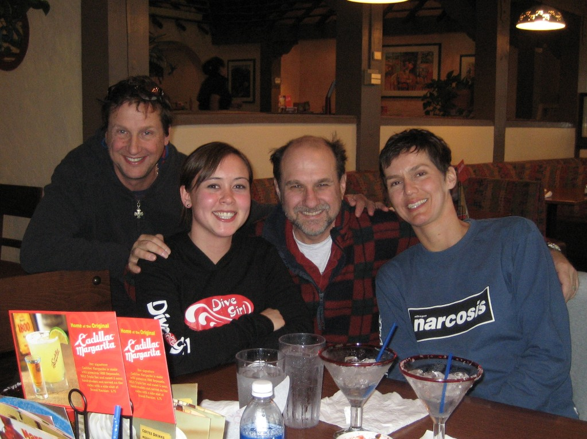

Monterey & Pt. Lobos
Index
Previous
2 of 26
Next
Rating: 3
Caption: Lawrence, Morgan, Gregg & Nathalie
Keywords: Diving, Monterey
Name: Monterey 2009-01-24 15-59-42
Date: 1/24/09 3:59:42 PM PST
Aperture: ƒ/2.8
Shutter Speed: 1/60
Exposure Bias: 0 ev
ISO: ISO 277
Focal Length: 5.8mm
Pixel Size: 2018 × 1511 (3.0 MP)
File Name: Bella 2009-01-24 15-59-42.JPG
File Size: 2.77 MB
Camera Model: Canon PowerShot SD630
Project Path: Monterey 2009-01
